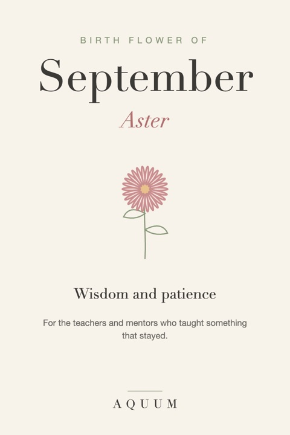

September Birth Flower: Aster Meaning and Gift Ideas
2026-09-30
Written by the team behind Aquum, a small birth flower gift shop. How we make money.

September's birth flowers are the aster and the morning glory. Asters bloom as summer turns to fall, filling gardens with purple, blue and pink when most flowers are fading.
What the aster means
The aster stands for wisdom and patience, along with love and faith. Its name comes from the Greek word for star, after the shape of its flowers. It's also the traditional flower for a 20th wedding anniversary.
The morning glory, September's second flower
The morning glory means affection. Its flowers open each morning and close by afternoon, which has made it a symbol of love that renews itself every day.
More in our full morning glory guide.
Who the aster suits
- Someone born in September
- Teachers and mentors, since September is back-to-school month
- Anyone whose patience you've relied on
An aster says: what you taught me stayed.
September birth flower gift ideas
- An aster shirt, mug or tote, a thank-you that lasts longer than an apple on the desk.
- A potted aster for fall color on a porch or balcony.
- A card for a teacher with the aster's meaning and one thing they taught you.
Shopping for a September birthday? See our September birthday gift ideas.